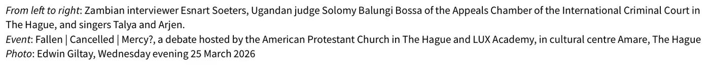

Bewijsstuk · Foto
Solomy Balungi Bossa bij het debat in Den Haag, 25 maart 2026
De passage
“Van links naar rechts: de Zambiaanse interviewer Esnart Soeters, de Oegandese rechter Solomy Balungi Bossa van de Kamer van Beroep van het Internationaal Strafhof in Den Haag, en de zangers Talya en Arjen. Evenement: Fallen | Cancelled | Mercy?, een debat georganiseerd door de American Protestant Church in Den Haag en LUX Academy, in cultuurcentrum Amare, Den Haag. Foto: Edwin Giltay, woensdagavond 25 maart 2026” Pagina 1, het bijschrift onder de foto. De drie regels van het bijschrift, elk cursief ingeleid met ‘From left to right’, ‘Event’ en ‘Photo’, zijn hier samengevoegd, met een punt na ‘The Hague’ aan het eind van de tweede. Vertaald uit het Engels; de oorspronkelijke tekst staat hieronder.
Oorspronkelijke tekst
“From left to right: Zambian interviewer Esnart Soeters, Ugandan judge Solomy Balungi Bossa of the Appeals Chamber of the International Criminal Court in The Hague, and singers Talya and Arjen. Event: Fallen | Cancelled | Mercy?, a debate hosted by the American Protestant Church in The Hague and LUX Academy, in cultural centre Amare, The Hague. Photo: Edwin Giltay, Wednesday evening 25 March 2026”

Waarom dit document telt
Het slot van het essay vermeldt dat de auteur op 25 maart 2026 sprak met rechter Solomy Balungi Bossa van het Internationaal Strafhof, die als hoofdgast deelnam aan een openbaar debat in Amare, Den Haag, op zichtafstand van het Ministerie van Defensie. Dit document bevat de foto die de auteur die avond zelf van het panel maakte, met bijschrift, gevolgd door de aankondiging die medeorganisator LUX Academy op Instagram plaatste. Het document laat zien wanneer en waar het debat plaatsvond, en wie de rechter was aan wie de auteur daar zijn vraag stelde over degenen die bewijzen van oorlogsmisdaden toedekken. Bossa was eerder tien jaar rechter bij het VN-Rwandatribunaal en daarna bij het restmechanisme dat het werk van het Rwanda- en het Joegoslaviëtribunaal voortzet.
Herkomst
- Document
- Samenstelling van twee pagina’s: een foto van het debat met bijschrift op pagina 1, en een schermafbeelding van de aankondiging op Instagram op pagina 2
- Evenement
- ‘Fallen | Cancelled | Mercy?’, een debat georganiseerd door de American Protestant Church in Den Haag en LUX Academy
- Plaats
- Cultuurcentrum Amare, Den Haag
- Datum
- Woensdagavond 25 maart 2026
- Foto
- Edwin Giltay
- Afgebeeld
- De Zambiaanse interviewer Esnart Soeters, de Oegandese rechter Solomy Balungi Bossa van de Kamer van Beroep van het Internationaal Strafhof in Den Haag, en de zangers Talya en Arjen
- Loopbaan
- Rechter bij het VN-Rwandatribunaal (2003–2013) en bij het restmechanisme (2012–2018), volgens haar profiel op www.
icc-cpi. int/ judges/ judge-solomy-balungi-bossa - Aankondiging
- Instagram-bericht van luxdenhaag070, LUX Academy, gedateerd 18 februari, dat opent met ‘An evening with a judge and you’re not even on trial!’
- Onderwerp
- Een openbare avond over recht en genade met een rechter van het Internationaal Strafhof, aangekondigd voor woensdag 25 maart, 20:00 uur, Amare Den Haag
- Taal
- Engels, met de Instagram-interface in het Nederlands
- Pagina’s
- 2
- Webadres
- instagram.com/p/DU6CYddCNpH, afgelezen van de adresbalk in de schermafbeelding
Aangehaald in: het essay ‘Het verbod viel, het boek bleef overeind’ in het hoofdstuk (12) ‘Geen andere optie meer’.
Bewijsstukpagina: https://
Document: https://
Laatst gewijzigd 13 september 2026, geraadpleegd 3 oktober 2026.

Deze pagina is een bewijsstuk bij het boek De doofpotgeneraal van Edwin Giltay en de bijbehorende website.